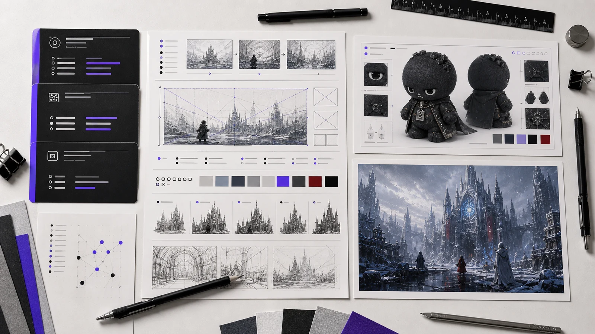

概念锚点
先定义角色或世界观最不可替换的气质，避免系列走散。
2026 / AIGC Prompt 研究
从一个概念词开始，将角色性格、世界规则、材质光影、镜头构图与负面约束拆成可复用的生成稿。结合 Error 27 与 Sanctuary Codex，这一页呈现我如何把文本设定推进为稳定的视觉系列。

展示化方法图：提示词不是一次性的描述，而是角色、环境、光影、材质、构图与限制条件能够反复组合的一组生成规则。
概念锚点 + 主体身份与情绪 + 世界与空间规则 + 材质和光影 + 镜头构图 + 叙事动作 + 负面约束 + 输出检查
每组生成稿先固定角色和视觉语法，再只替换可控变量，例如场景、姿态或画面尺度。这样能在保持系列一致性的前提下，继续拓展海报、设定图、界面应用和关键场景。两组已经完成的项目，分别验证了软萌 IP 的传播语言与宏大世界观的场景一致性。

用毛绒材质、旧系统弹窗、错误红与低饱和灰白，稳定“安静报错”的 IP 识别。

以冷暖阵营关系、宗教建筑和工业遗迹，保持场景扩写时的世界规则统一。
先定义角色或世界观最不可替换的气质，避免系列走散。
拆开主体、空间、材质、镜头和光线，形成可编辑模块。
用色彩、道具、服装与构图规则维持跨图识别度。
识别形体、语义与风格漂移，再回写到下一版生成稿。
页面以已完成的 IP 设定与世界观视觉作为案例。每张作品图对应的可复用生成稿已在项目页面中建立展示逻辑，便于后续补充系列内容。